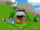

De: La Frikipedia, la enciclopedia extremadamente seria.
De: La Frikipedia, la enciclopedia extremadamente seria. De: La Frikipedia, la enciclopedia extremadamente seria.
«Antes tenia una vida»
~ Alguien sobre dragonvale
«It's a trap!»
~ Almirante Ackbar sobre Dragonvale
Dragonvale es un juego online para iphone ipad y variaciones similares, en el que tienes que hacerte cargo de un parque de dragones hermafroditas hipersexsuales, teniendo como objetivo obtener todos los 12365798709728374897940729374823423414329 dragones que hay en el juego, cosa que puedes hacer comprandolos con dolares, o haciendo que dos de tus dragones follen como unos salvajer durante horas y horas
Con el dinero que ganes podras hacer una gran cantidad de cosas inutiles como comprar mas dragones, decorar, o quitar los putos arboles y rocas que hay en tu isla, de cualquier forma casi todo lo que construyes o quitas tardara entre 1 y 12353731246721498246 horas para completarse, es decir, tienes que esperar como un coño de madre o pagar para acelerar el proceso. A demas deberas construir unas granjas de mierda para comprar comida (que vas a tener que esperar a que este lista) y alimentar a tus dragones para que suban de nivel y caguen mas oro.
Al principio comienzas con una sola isla que primero tienes que limpiar de arboles y demas mamades de ese estilo para tener suficiente espacio para poner a tus dragones, pero a medida que subas de nivel y consigas unos 6568271379872836721668251784 millones de oros podras comprarte la segunda isla, y asi sucesivamente hasta que tengas 6 islas, despues te jodes por falta de espacio
Entre las islas hay 2 que se destacan de las otras por ser retrasadas mentales
Es un habitat para dragones de tipo gema (no me digas)
Es una version de la cueva de apareamiento, solo que sirve para hacer orgias trios, si, tres dragones tirando duro a la vez
Son dos tipos
Son la raza aria del juego, es decir, dragones de un solo elemento (aire, agua, metal atc...), son los mas basicos y suelen ser una puta mierda que no genera mucho oro y que solo sirven para follar y tener crias
Son los que se producen cuando apareas dos dragones, tienen dos elementos y son los que cagan mas pasta. entre ellos se encuentran los dragones raros como el de luna, el de oro, etc..
Hay 2 formas de conseguir un dragon, una es haciendole una llamada a la cigüeña y procreando. y la otra es comprando uno en algun horfanato de dragones (casi todos teniendo que pagar de verdad). Aun asi hay dragones que solo se pueden comprar, que son los que son de un solo elemento como hagua, tierra, fuego, frio, metal, planta, aire, etc..., pero para ello primero deberas desbloquearlos subiendo de nivel
Cuando mama dragon y papa dragon se quieren mucho mucho mucho... Te tienes que comprar una cueva de mierda () en la que puedes hacer que se follen salvajemente el uno al otro para que pongan un huevo, lo cual tarda en promedio unas dos mil horas, y para colmo despues debes incubarlo para que nazca un dragon de sabe dios que especie(que tarda 2000 horas mas), todo esto para despues tener que encotrarle un habitat en el que pueda vivir de acuerdo a sus elementos, y darle comida para que suba de nivel
Si tienes 30 millones de dolare y no te importa gastar un poco en un juego tan marico, puedes comprarte los dragones que quieras, incluso los que sean por tiempo limitado (a menos que hayan expirado). Y sus correspondientes habitats
Segun el Juego Kairos fue el primer dragon, segun dice en su biblia

|
Al principio no habia nada,entonces Kairos dijo "Fuck this shit, y asi se creo el mundo, pero vio Kairos que le faltaba sexo asi que se follo al mundo y creo asi las islas flotantes, y a los demas dragones los creo para limpiaran el desastre | 
|
| Amen |
Autor(es):